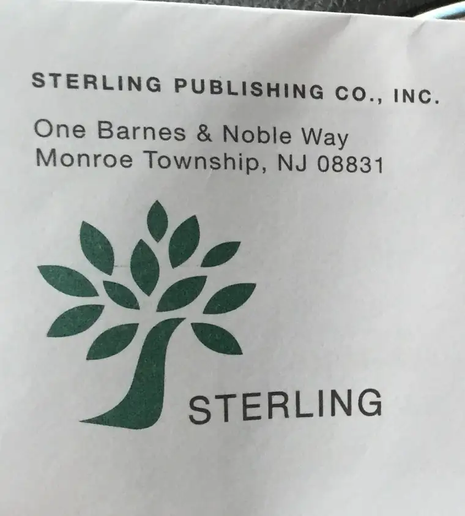
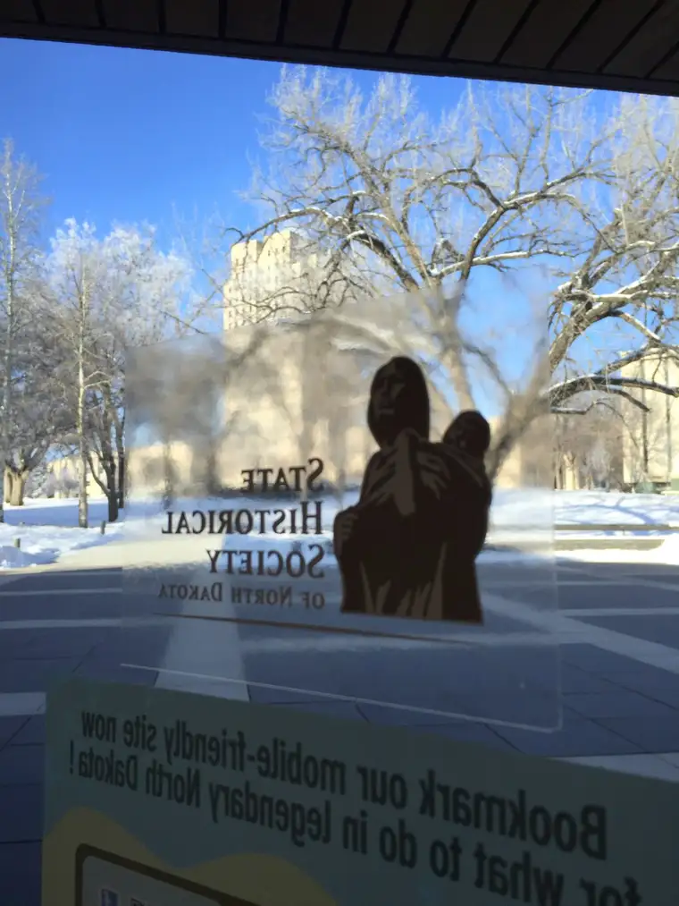
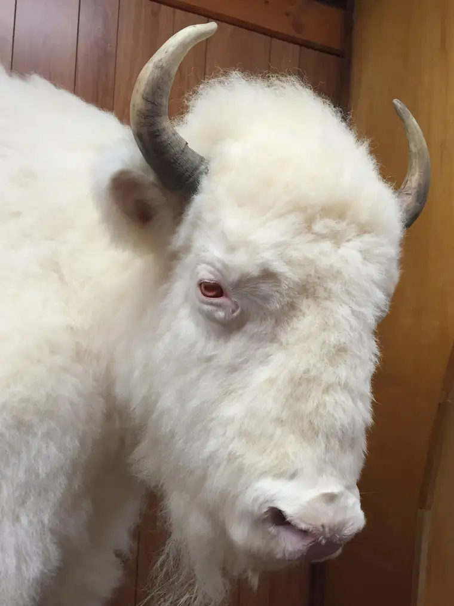
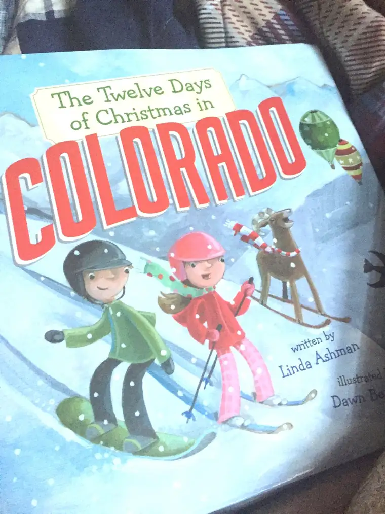
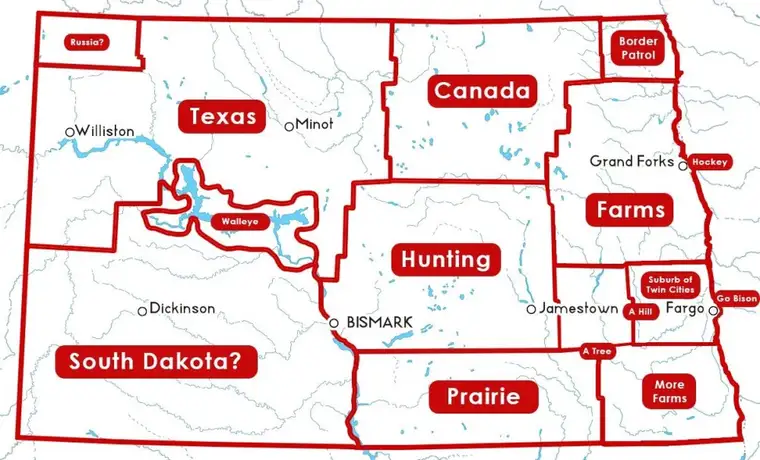
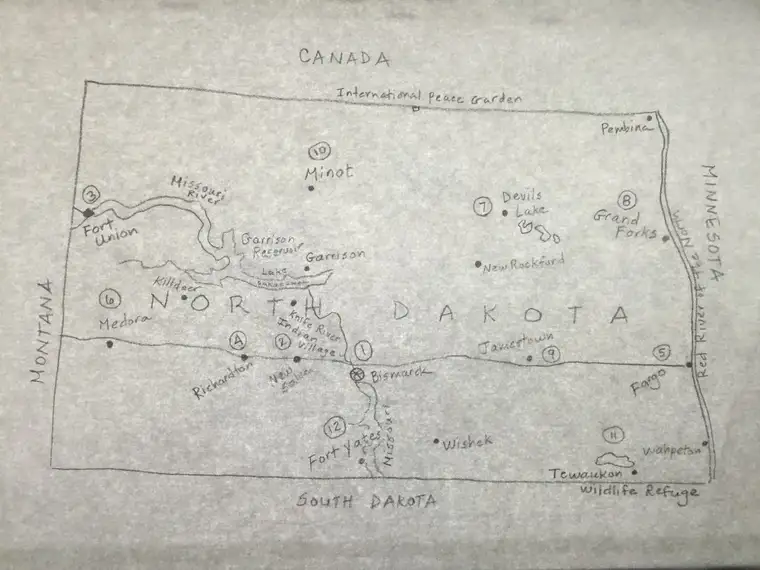

While my husband and his friend Joel were off in Texas this past weekend, watching the North Dakota State University Bison win their record-setting five-peat…

I was here at home, hunkered down writing a children’s book about the place where the bison really do roam: North Dakota.
This past fall, everything became very official. The contract that had been talked about for months was signed. (A thrill!) And plans quickly set in motion for how I would tackle this project amidst the busy of everyday life as a mother of five with weekly regular deadlines.


It required a few trips out of town to plot and plan and ponder. Two of those trips involved a swing through the state capitol grounds…

With sights set on the amazing North Dakota Heritage Center & State Museum.

It’s free to get in and they were gracious enough there to let me just plant myself in a seat, pausing and roaming as I pleased. I can’t imagine a better place for absorbing North Dakota and all its offerings in one stop. It’s incredible, with new exhibits going up frequently. If you can, do visit this facility when you’re in Bismarck.
But to the point, the book…it was a blast to write. A million details to absorb but so much fun to be back inside the mind of a child; a child exploring a state I have truly come to love.
I wasn’t alone in this effort by any means. There were friends who offered input, and my sister was, as always, my first editor. She’s so good at that; a safe person to bring first drafts to with an eye for errors. And you know, I’d rather catch them now than later. Thanks ‘Mille!
I had other helpers, too. This guy, for instance.

And my kids. My youngest ones especially. They giggled at all the right places when I read them my manuscript. I can’t ask for anything more.
In the middle of it all, my sweet grandma passed away. I know she would have been proud of me completing this project. She’s a part of it — no doubt about it. And someday, you all will see her in the pages.
The book is part of a series featuring a cousin visiting a cousin in a state far away (North Dakota in this case). The out-of-state cousin writes home to her (in this case) parents about all the amazing things she’s seeing.
The publisher sent me a couple sample books to help guide me – it was a great help.

I liked that there was a format, like “P is for Peace Garden: A North Dakota Alphabet,” one of my earlier children’s books, and yet with creative license entwined, too.
My Jan. 15 deadline was looming, and with three funerals in the past weeks, I was starting to sweat bullets a bit. Or maybe North Dakota icicles, given the recent chill.
But, God willing, things came together, and I am super happy with the results.
The only negative is that it’s going to be a bit of a wait, for me and for you. As of now, we’re looking at a Fall 2017 release date. I hope you can wait with me. I think it will be worth the wait. When the time comes, it’s going to be a real joy to share this adventure with children and others who love this state or want to know more about it.
I’m grateful for the chance, and am thrilled to be at this point with it. My mind is alive with what the illustrator is going to do with my words.
This cracked me up — someone’s version of North Dakota. This came to my attention while I was in the thick of writing this and I couldn’t help but nod a bit at some of it, though of course it’s in jest.

Here’s my version that I had to create to help the illustrator out. I was way out of my comfort zone here with tracing paper and a pencil. This took forever. (I do stick figures pretty well, though.)

Well anyway, thanks for being along for the ride with me. In this case, I’m thinking it’s a sled we’re on. Weeeeeeee!
Q4U: What project did you finish in the New Year? What project still lies before you?